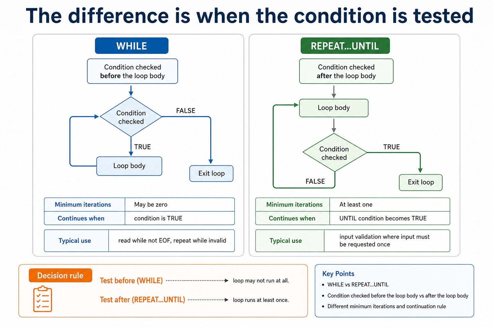

A WHILE...ENDWHILE loop is a pre-condition loop: it tests before the body and may run zero times. A REPEAT...UNTIL loop is a post-condition loop: it executes the body before testing and therefore runs at least once. A FOR...NEXT loop is count-controlled.
Select and justify the loop structure from the problem: use FOR when the count is known, WHILE when execution may be unnecessary and continuation is tested first, and REPEAT when the body must run once before a stopping condition can be tested. The justification must use the scenario, not only say that one loop is easier.
Worked example: Choose the loop from the stopping rule
Input validation must request a value at least once, so REPEAT; INPUT Mark; UNTIL Mark >= 0 AND Mark <= 100 is suitable. Processing records while a file is not at EOF can use WHILE because an empty file may require zero iterations. Processing twelve months uses FOR because the count is fixed.
The difference is when the condition is tested

The difference is when the condition is tested: source-grounded visual explanation.
Lesson fact: WHILE vs REPEAT
Lesson fact: REPEAT...UNTIL
Lesson fact: Condition checked
Lesson fact: before the loop body
Lesson fact: after the loop body
Lesson fact: Minimum iterations
Lesson fact: Continues when
Lesson fact: condition is TRUE
Lesson fact: UNTIL condition becomes TRUE
Lesson fact: Typical use
Lesson fact: read while not EOF, repeat while invalid
Lesson fact: input validation where input must be requested once
Core syllabus practice
Pre-condition, post-condition and loop choice: apply and assess
Targeted practice
1. Which structure may execute zero times?
Show answer
WHILE, because it tests its condition before the body.
2. Which structure must execute at least once?
Show answer
REPEAT...UNTIL, because it tests after the body.
3. Why is FOR suitable for twelve months?
Show answer
The twelve repetitions are known before execution.
Exam-style question
5 marks
Suggest and justify FOR, WHILE or REPEAT...UNTIL for (a) processing 50 array elements, (b) reading while a file is not at EOF, and (c) requesting a password at least once until correct.
Show MS
Answer
Guidance
Marks
FOR for 50 known elements
Do not select a loop only by its spelling or claim that WHILE always executes once.
1
justifies fixed count/bounds
1
WHILE for the pre-tested EOF condition and possible empty file
1
REPEAT...UNTIL for password input that must occur once
1
distinguishes pre-condition, post-condition and count-controlled structures
Repeat while a condition says so, not because you feel optimistic.
Condition-controlled loops are used when the number of repetitions is not known in advance. A WHILE loop
checks before it runs; a REPEAT...UNTIL loop runs once before checking. The condition is the door guard:
if it never changes, the program may keep walking into the same wall.
DistinguishWHILE and REPEAT...UNTIL control flow
Traceconditions, updates and loop exit points accurately
Applycondition-controlled loops to validation and sentinel-value tasks
WHILEcheck first, maybe run zero times
REPEATrun first, check after
Riskcondition never changes
The loop condition is not a decoration. It is the exit plan.
Why this matters
Paper 2 often uses condition-controlled loops for validation, EOF-style reading and sentinel values.
Common error
A loop that never updates the variable in its condition is not persistent; it is stuck.
Warm-up hook
Will the loop run?
Given Password = "open" and CorrectPassword = "open", click the correct result.
Pseudocode
WHILE Password <> CorrectPassword
OUTPUT "Try again"
INPUT Password
ENDWHILE